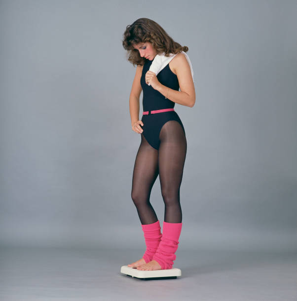
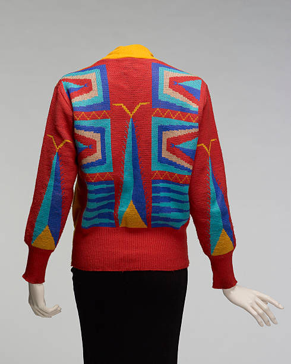
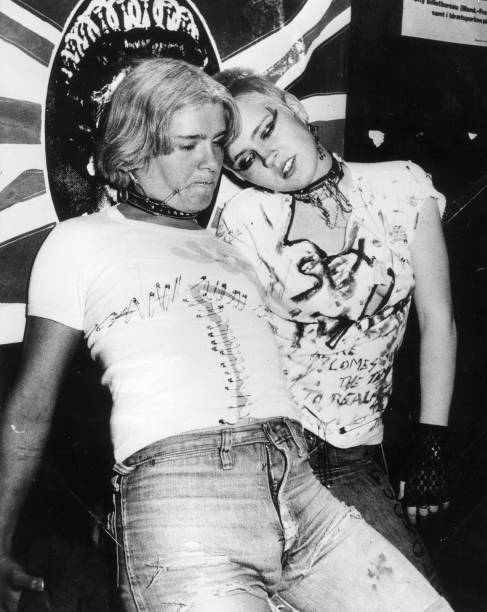
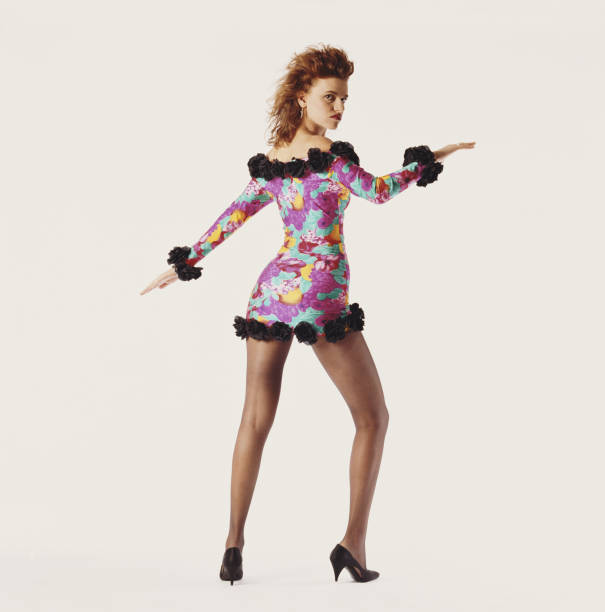
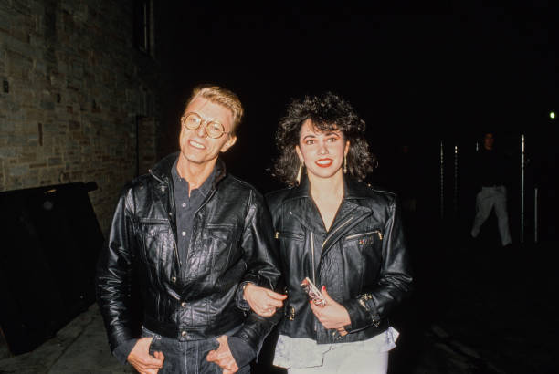
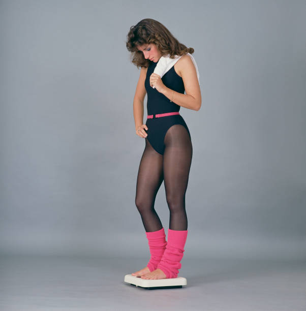
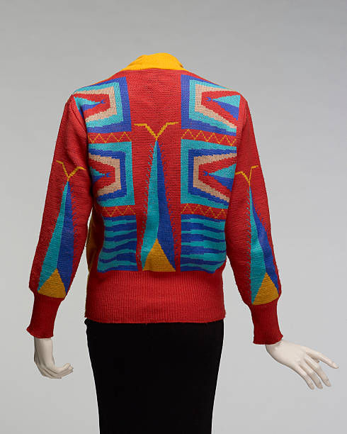
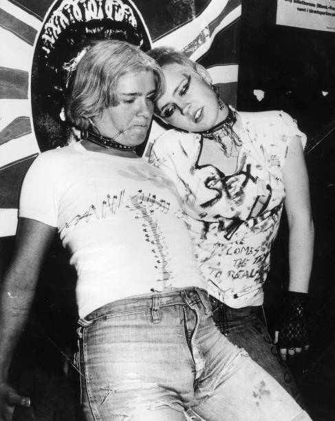
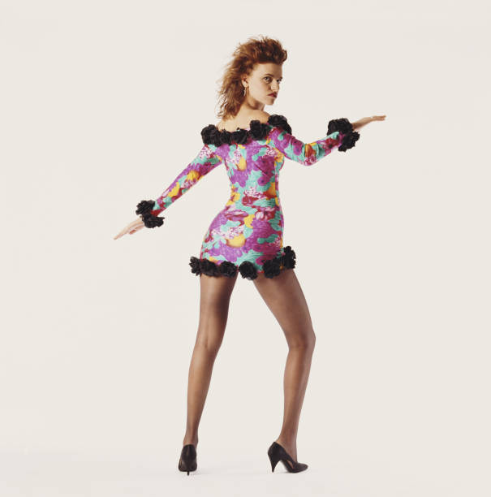
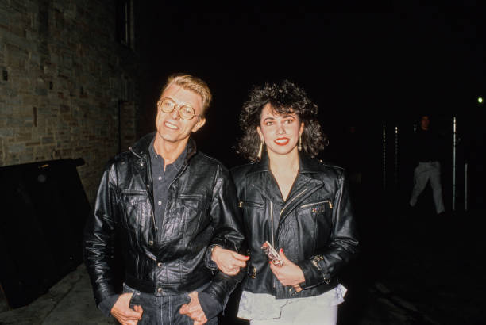

80's Fashion Trends
80's fashion was all about bold colors, oversized silhouettes, and statement accessories. From neon leggings to acid-washed jeans, the decade defined a rebellious and fun aesthetic.
Shoulder pads were a staple in women's fashion, making power dressing a huge trend. Leather jackets, often paired with fingerless gloves, became iconic thanks to pop stars like Michael Jackson and Madonna.
Leg warmers, scrunchies, and oversized sweaters were everyday essentials, reflecting both comfort and a flashy style. The influence of hip-hop also brought in tracksuits, gold chains, and high-top sneakers.
Punk fashion took off with ripped denim, studded jackets, and combat boots, heavily inspired by bands like The Ramones and The Sex Pistols. Meanwhile, preppy fashion lovers embraced polos, sweater vests, and high-waisted khakis.
No matter the style, the 80's were about standing out and expressing personality through clothing. The influence of this decade is still visible in modern fashion trends.
 








